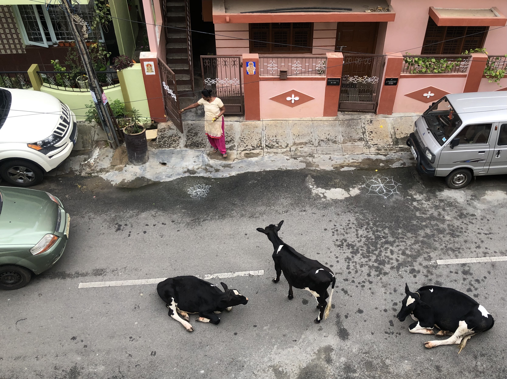

These are a few snippets from back home that I find alluring I think these are sights that may puzzle/amuse those who don’t come from India and so I’d like to share!



This sight is not a rare one to see. Cows roam the streets and tend to sit down and rest wherever they deem fit. It is upto whoever else that may use that road to figure the rest out. And so often, you’ll see these precious creatures causing mayhem while they blissfully stare off into space. Honestly, I don't think the commuters seem to mind. Cows are also considered holi and it is also common to see people coming out of their house with bananas to feed them as they pass by and take their blessing. In the above picture, a woman does exactly that while a car awaits- trying to figure out the obstacle course.
Quite a puzzling scene isn't it? Men doused in pink powder waiting around? Err…. Well, these men have just happened to play Holi- the "Festival of Colours" that celebrates the triumph of good over evil. It is tradition to play with colors and water in addition to visiting family and eating sweets!
Here you can see two women in their nightgowns having washed the front of their house with water and putting ‘rangoli’ (R-uh-ng-oh-l-ih). It is a geometric pattern of repetitive shapes that represents the happiness, positivity and liveliness of a household. It is intended to welcome Lakshmi, the goddess of wealth and good luck. It is believed that a household without a clean entrance and rangoli is an abode of bad luck.
Nothing of deep meaning here. It's just funny because people will go to lengths to avoid getting an actual truck when it comes to transporting goods. It always astonishes me to see the tricks pulled to accommodate a truck's worth of goods onto a two-wheeler. Here, a man sits uncomfortably, barely reaching the handles, going on about his day.
The neighbourhood kids on a parade. At the end of the festival ‘Ganesha’, there is a ‘block party’ of sorts where there is a stage and a band propped up on every other street corner performing while food flows through the crowds. As shown in the picture, a truck blares music and does the rounds with the neighbourhood kids.
I find it endearing and feel lucky to know that I have access to fresh produce within a 2 min walk from my home.-and on the days I'm lazy, the produce comes to me!
It is custom for women to wear jasmine in their hair as it is one of the signs of being married. The rose was an offering to god which she placed in her briad after the daily prayers.
In- yes you guessed it-yet another festival- the ‘peculiar’ tradition is to worship objects with engines. Why you ask? I don't really know. Will have to call my grandma to find out.
In the picture is a handwoven carpet that my grandma made by upcycling her old saris (a traditional garment of 7 yards draped around the body). Also at the door’s entrance are flowers kept on either side and more of the rangoli. This time in simple 6 lines.